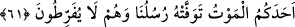

işaret için zikredilmiştir. Sanki şöyle buyurulmuştur: ‘Sizi geceleyin öldüren, sonra ne
işleyeceğinizi bildiği halde gündüzün sizi dirilten O’dur.’
“Sonra” ölümle “dönüşünüz” asla başkasına değil “yine O’nadır.”
“Sonunda” o gece ve gündüzlerde işlediğiniz amellerinizin karşılığını vererek “O,
yaptıklarınızı size haber verecektir.”
61. O, kullarının üstünde yegâne kudret ve tasarruf sahibidir. Size koruyucular
gönderir. Nihayet birinize ölüm geldi mi elçilerimiz (görevli melekler) onun canını
alırlar. Onlar vazifede kusur etmezler.
“O, kullarının üstünde tek hakimdir.” Kullarının işlerinde tasarruf sahibi sadece
O’dur, başkası değildir. Onlar hakkında yaratma, yok etme, hayat verme, öldürme, azab
etme, sevab verme gibi dilediği şeyleri yapar.
“Üstünde” kelimesinin manası, Allah Teâlâ’ya mekan izâfe etmek imkansız olduğu
için mekan anlamında değildir. Onun mânâsı, sadece ‘üstün ve güçlü olma’ ve benzeri
mânâlardır. Bunun benzeri şu cümledir: “Falan, ilimde falanın üstündedir.” Yani, ondan
daha bilgilidir, demektir.
Mesnevî’de şöyle denilmiştir:
El üstünde el var... Bu nereye kadar!
Ta son erişilecek menzile, Allah’a kadar
O öyle bir denizdir ki, ne dibi var ne kıyısı
Bütün denizler onun yanında sadece sel kadar
Hileler ve çareler ejderha ise
“İllallah”ın önünde onlar “lâ” kadar
[Tek olan Allah yanında hepsi hiçtir]
“Size koruyucu (melek)ler gönderir.” Yani ey mükellefler, Allah Teâlâ özellikle size
amellerinizi kaydeden melekler gönderir, demektir. Bunlar Kiramen Katibîn
melekleridir.
Bu meleklerin gönderilmesinin hikmeti şudur: Mükellef kimse, amellerinin yazıldığını
ve bütün mahlukatın gözü önüne serileceğini bildiği zaman bu, onun günahlardan
sakınması konusunda daha etkili olur. Köle, efendisinin lütfuna güvenir, onun
affedeceğine ve kusurlarını görmezden geleceğine inanırsa, hizmetinde bulunup da
kusurlarına vâkıf olan diğer insanlardan çekindiği gibi ondan çekinmez.
Kâşifî der ki: